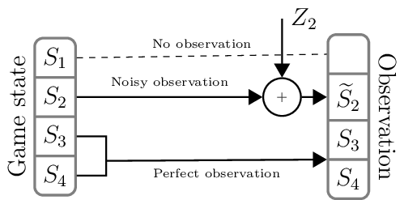

The Observation Engines
States are rarely perfectly observable by agents:
the other agent’s internal states are usually unknown,
the task’s state may be partially observable; for example, a human observer may produce noisy observations,
an agent’s own internal state may be partially observable; for example, a human observer might have poor retention capabilities.
Furthermore, there might be a cost associated with making observations:
There can be a tradeoff between the time needed to produce an observation and its quality; for example, precise observations may be costly (in terms of time).
A human observer may enjoy making observations which are very different (according to some criterion) to the previous ones, in which case it would be rewarded for differing observations, satisfying its curiosity.
CoopIHC provides a generic object called an observation engine which specifies how an observation is created from the game state. To create a new observation engine, you can base it off an existing observation engine or subclass the BaseObservationEngine.
Subclassing BaseObservationEngine
To create a new engine by subclassing the BaseObservationEngine class, you have to redefine the observe() method. You can virtually put anything inside this function: that includes the output of a neural network, of a complex simulation process, and even the output of another bundle (see Modularity for an example). Below, we show a basic example where we define an engine that only looks at a particular substate.
1class ExampleObservationEngine(BaseObservationEngine):
2 """ExampleObservationEngine
3
4 A simple example where the engine is only able to see a particular state (observable_state).
5
6 :param observable_state: only state that can be observed
7 :type observable_state: string
8 """
9
10 def __init__(self, observable_state, *args, **kwargs):
11 super().__init__(*args, **kwargs)
12 self.observable_state = observable_state
13
14 # @BaseObservationEngine.get_params
15 @BaseObservationEngine.default_value
16 def observe(self, game_state=None):
17 """observe
18
19 Select only state observable_state.
20
21 :param game_state: game state
22 :type game_state: `State<coopihc.base.State.State`
23 :return: (observation, obs reward)
24 :rtype: tuple(`State<coopihc.base.State.State`, float)
25 """
26 return (
27 State(**{self.observable_state: game_state[self.observable_state]}),
28 0,
29 )
Don’t forget to return a reward with the observation. The effect of this engine can be tested by plugging in a simple State:
1obs_engine = ExampleObservationEngine("substate1")
2# Game state before observation
3# >>> print(S)
4# ---------- ---------- - ---------
5# substate1 substate_x 0 Numeric()
6# substate_y 2 Numeric()
7# substate_2 substate_a 0 CatSet(3)
8# ---------- ---------- - ---------
9
10print(obs_engine.observe(game_state=S)[0])
11# Produced Observation
12# >>> print(obs_engine.observe(S)[0])
13# --------- ---------- - ----------
14# substate1 substate_x 0 Cont(1, 1)
15# substate_y 2 Discr(3)
16# --------- ---------- - ----------
Note
The signature observe(self, game_state=None) is expected. When called with game_state = None, the engine will fetch the agent’s observation. If the game state is actually passed, it will use the input state as basis to produce the observation. This is useful, for example, when testing your engine and you want to control the input.
Combining Engines – CascadedObservationEngine
Serially combine several engines. Not documented yet, see API Reference
WrapAsObservationEngine
Wrap a bundle as an engine. Not documented yet, see API Reference
RuleObservationEngine
This observation engine is specified by rules regarding each particular substate, using a so called mapping.
obs_eng = RuleObservationEngine(mapping=mapping)
obs, reward = obs_eng.observe(game_state=example_game_state())
For example, in the example below, the observation engine is defined in a way that it will not observe the first substate, that it will have a noisy observation of the second substate, and that it will perfectly observe the remainder of the state.

Fig. 11 The observation engine
A mapping is any iterable where an item is:
(substate, subsubstate, _slice, _func, _args, _nfunc, _nargs)
The elements in this mapping are applied to create a particular component of the observation space, as follows
observation_component = _nfunc(_func(state[substate][subsubstate][_slice], _args), _nargs)
which are then collected to form an observed state. For example, a valid mapping for the example_game_state mapping that states that everything should be observed except the game information is as follows:
from coopihc.base.utils import example_game_state
print(example_game_state())
# Define mapping
mapping = [
("game_info", "turn_index", slice(0, 1, 1), None, None, None, None),
("game_info", "round_index", slice(0, 1, 1), None, None, None, None),
("task_state", "position", slice(0, 1, 1), None, None, None, None),
("task_state", "targets", slice(0, 2, 1), None, None, None, None),
("user_state", "goal", slice(0, 1, 1), None, None, None, None),
("assistant_state", "beliefs", slice(0, 8, 1), None, None, None, None),
("user_action", "action", slice(0, 1, 1), None, None, None, None),
("assistant_action", "action", slice(0, 1, 1), None, None, None, None),
]
# Apply mapping
obseng = RuleObservationEngine(mapping=mapping)
obseng.observe(example_game_state())
As a more complex example, suppose we want to have an observation engine that behaves as above, but which doubles the observation on the (“user_state”, “goal”) StateElement. We also want to have a noisy observation of the (“task_state”, “position”) StateElement. We would need the following mapping:
def f(observation, gamestate, *args):
gain = args[0]
return gain * observation
def g(observation, gamestate, *args):
return random.randint(0, 1) + observation
mapping = [
("task_state", "position", slice(0, 1, 1), None, None, g, ()),
("task_state", "targets", slice(0, 2, 1), None, None, None, None),
("user_state", "goal", slice(0, 1, 1), f, (2,), None, None),
("user_action", "action", slice(0, 1, 1), None, None, None, None),
("assistant_action", "action", slice(0, 1, 1), None, None, None, None),
]
Note
It is important to respect the signature of the functions you pass in the mapping (viz. f and g’s signatures).
Typing out a mapping may be a bit laborious and hard to comprehend for collaborators; there are some shortcuts that make defining this engine easier.
Example usage:
obs_eng = RuleObservationEngine(
deterministic_specification=engine_specification,
extradeterministicrules=extradeterministicrules,
extraprobabilisticrules=extraprobabilisticrules,
)
There are three types of rules:
Deterministic rules, which specify at a high level which states are observable or not, e.g.
engine_specification = [
("game_info", "all"),
("task_state", "targets", slice(0, 1, 1)),
("user_state", "all"),
("assistant_state", None),
("user_action", "all"),
("assistant_action", "all"),
]
Extra deterministic rules, which add some specific rules to specific substates
def f(observation, gamestate, *args):
gain = args[0]
return gain * observation
f_rule = {("user_state", "goal"): (f, (2,))}
extradeterministicrules = {}
extradeterministicrules.update(f_rule)
Extra probabilistic rules, which are used to e.g. add noise
def g(observation, gamestate, *args):
return random.random() + observation
g_rule = {("task_state", "position"): (g, ())}
extraprobabilisticrules = {}
extraprobabilisticrules.update(g_rule)
Warning
This observation engine handles deep copies, to make sure operations based on observations don’t mess up the actual states. This might be slow though. If you want to get around this, you could subclass the RuleObservationEngine to remove copies.
Several rules are predefined:
Rule Name |
Game Info |
Task State |
User State |
Assistant State |
User Action |
Assistant Action |
Full name |
|---|---|---|---|---|---|---|---|
Oracle |
✅ |
✅ |
✅ |
✅ |
✅ |
✅ |
oracle_engine_specification |
Blind |
✅ |
❌ |
❌ |
❌ |
✅ |
✅ |
blind_engine_specification |
BaseTask |
✅ |
✅ |
❌ |
❌ |
✅ |
✅ |
base_task_engine_specification |
BaseUser |
✅ |
✅ |
✅ |
❌ |
✅ |
✅ |
base_user_engine_specification |
BaseAssistant |
✅ |
✅ |
❌ |
✅ |
✅ |
✅ |
base_assistant_engine_specification |